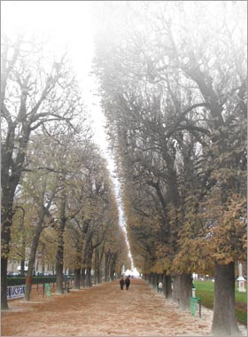

| |
|
 |
|
Lucian Frățilă :: Mini-website
|
|
A FEAST OF FRIENDS
Wow, Im sick of doubt
Live in the light of certain
South
Cruel bindings.
The servants have the power
Dog-men and their mean women
Pulling poor blankets over
Our sailors
Im sick of dour faces
Staring at me from the tv
Tower, I want roses in
My garden bower; dig?
Royal babies, rubies
Must now replace aborted
Strangers in the mud
These mutants, blood-meal
For the plant thats plowed.
They are waiting to take us into
The severed garden
Do you know how pale and wanton thrillful
Comes death on a strange hour
Unannounced, unplanned for
Like a scaring over-friendly guest you've
Brought to bed
Death makes angels of us all
And gives us wings
Where we had shoulders
Smooth as ravens
Claws
No more money, no more fancy dress
This other kingdom seems by far the best
Until its other jaw reveals incest
And loose obedience to a vegetable law.
I will not go
Prefer a feast of friends
To the giant family.
(The Doors)
|

|
|
|
|
|
|